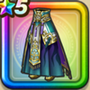

じげんりゅうの装束下
攻略班 8.5点 / 守備減耐性+10%混乱耐性+5%守備減耐性+10%混乱耐性+5%【レンジャー】ヒャド属性ダメージ+5%【海賊】ヒャド属性ダメージ+5%ヒャド属性ダメージ+5%
くわしい特徴
【レベル別習得スキル】 Lv1守備減耐性+10% Lv5さいだいMP+5 Lv8きようさ+10 Lv10混乱耐性+5% Lv12【レンジャー】ヒャド属性ダメージ+5% Lv15【海賊】ヒャド属性ダメージ+5% Lv18ヒャド属性ダメージ+5% Lv20守備減耐性+10% Lv23守備力+5 Lv25混乱耐性+5% 【限界突破スキル】 1凸攻撃力+7 2凸すばやさ+10 3凸守備力+5 4凸さいだいHP+10